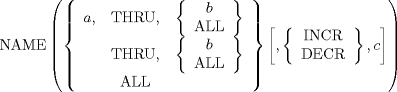

| 2.2. Subscripted Variables in the APT Language | ||
|---|---|---|
 | Chapter 2. Computing and Subscripted Variables |  |
| 2.2. Subscripted Variables in the APT Language | ||
|---|---|---|
| | Chapter 2. Computing and Subscripted Variables | |
The APT processor provides the capability of defining an array of geometric quantities or scalars that may be referenced by one symbolic name. The individual quantities may be defined or referenced by means of a subscript or an index.
A(1) = 2 A(2) = 5
The scalar quantity 2 is stored in the first storage location for A, and the scalar quantity 5 is stored in the second storage location of A.
When a symbol is used to define an array of quantities, the RESERV statement must be used to define the extent of the array before any referencing to the subscripted symbol in the part program. For example:
RESERV/ A, 50 $$ or RESERV/ 50, A
indicates that 50 storage locations are to be set aside for the symbol A. The first pair of entries in the RESERV statement defines the order for subsequent pairs (symbol, range or range, symbol). The array(s) defined in a RESERV statement may be used to store either scalars or surfaces. Statement ID's and MACRO names cannot be subscripted. The first usage of a subscripted variable will determine whether surfaces (or scalars) are to be allowed for that array. For example:
RESERV/ L1, 10, C1, 20, P1, 5, Q, 20 L1(2) = LINE/ 2.0, 1.0, 2.0, 5.0 C1(5) = CIRCLE/ 0, 0, 0, 0 P1(1) = POINT/ 0, 1, 0 Q(1) = 6.0 * 3 ** 2
would allow ten surfaces to be defined using the symbol L1(1)-L1(10), 20 surfaces to be defined using the symbols C1(1)-C1(20), etc. Finally, 20 scalars could be defined using the symbols Q(1)-Q(20).
The extent of the array must be specified by a scalar number; a variable symbol cannot be used in place of the required value.
$$ OK RESERV/ A, 50 $$ Not allowed B = 50 RESERV/ A, B
The value of the index (subscript) in a later part program statement cannot extend beyond the range assigned to the symbol by the RESERV statement. The above example indicates that the allowable range for the subscript is between 1 and 50, inclusive. Thus, the following examples would result in an error condition.
A(0) = 6 A(61) = 3.56 A(-1) = 10
The value of the subscript may be expressed as a number (as shown in the examples), as a symbolic scalar, or as a computed expression. Although the subscript value may -- as a result, for instance, of having been computed -- have a fractional part (that is, not be a perfect integer), it is truncated to an integer value when used for subscripting purposes.
Several input formats used in APT part programming call for writing strings (sometimes long) of data items of the same class, such as all point definitions. Sometimes these data items have been calculated earlier in the part program and can be defined as elements of a subscripted array. In place of writing a string of data of the form:
A(1), A(2), A(3), A(4), ... A(n)
a modification of the subscript format permits the writing of a single item:
A(1, THRU, n)
which is exactly equivalent to the list of elements of the subscripted array A shown above.
The general form of this "inclusive subscript" notation is:

where a, b and c are scalar values expressed in any of the forms available in the APT language. This notation is equivalent to a list of consecutive individual elements of the subscript array for the symbol NAME, between subscript value a and subscript value b at interval of c. The value a specifies the lowest subscript of the implied list, and be the highest value. These are not necessarily the first and last values of the entire array; they must, of course, be within the range of the array.
the implied list is from a to b if the incremental value c is positive, and from be to a if the increment is negative. A negative c may be specified by either a negative sign for the increment with the INCR modifier, or a positive c with the DECR modifier. A negative c with DECR is equivalent to a double negative, the effect being positive. The incremental modifier and value need not be given; if omitted, a positive increment of 1 is assumed. When using incremental values other than 1, the final subscript of the implied list will be the last subscript value that does not exceed the specified limit and need not be the same as the limiting value. For Example:
A(1, THRU, 8, INCR, 3)
implies the list:
A(1), A(4), A(7)
When the value of the last subscript of the array is desired for b in the inclusive subscript notation, the modifier ALL may be used, in place of a scalar following THRU, to indicate it. When the inclusive subscript is to represent a list with the subscript limits of 1 and the highest value of the array, regardless of the increment value, of direction, the notation "a, THRU, b" in the subscript nest may be replaced by the single modifier ALL; for example:
A(ALL) or
A(ALL, DECR, 2)
The first element of the examples implies a list of all of the elements of the array A, in the order:
A(1), A(2), A(3), ... A(n)
The second example implies a list of every other element of the array A, starting with the last one, in the order:
A(n), A(n-2), A(n-4), ...
If the low end of the range is to be 1, the value of a may be omitted. For example:
A(THRU, ALL)
is equivalent to:
A(1, THRU, ALL)
Examples of the use of inclusive subscripts:
L1 = LINE/ A(ALL)
where A is a scalar array with four or six elements.
L1 = LINE/ B(7, THRU, 10)
where B is a scalar array with ten or more elements.
L1 = LINE/ B(7, THRU, ALL)
where B is a scalar array with exactly ten or exactly twelve elements.
T1 = TABCYL/ NOZ, SPLINE, P(ALL)
where P is an array of three of more points.
In the general form:
NAME(a, THRU, b)
a should be the lower value of the range, and b should be the upper value of the range. If a=b,
P(5, THRU, 3)
has an implied positive direction and an increment value of 1. It should therefore define the low end of the array P(5) and continue defining with a positive increment of 1 (P(6), P(7), ...) until the high end is reached or passed. In this case, the high end, 3, is passed immediately, so P(6), etc., are not defined. However, the one value P(5) is defined.
The converse example:
P(5, THRU, 3, DECR, 1)
is to start at the high end P(3) and decrease by 1 until the low end P(5) is reached. In this case, only P(3) will be defined.
Inclusive subscript notation may be used in any geometric definition statement (with the one exception noted in Section 3.22.2) and the PRINT or PUNCH statements. These are the only types of statements in which the inclusive subscript is allowed.
| |  | |
| Chapter 2. Computing and Subscripted Variables |  | Chapter 3. Geometric Statements in APT |